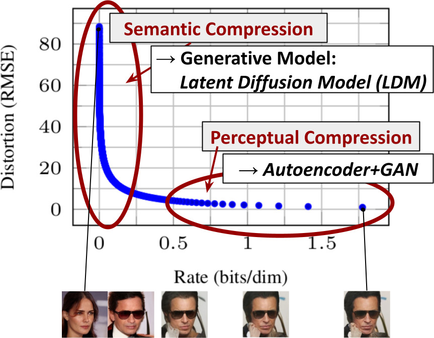
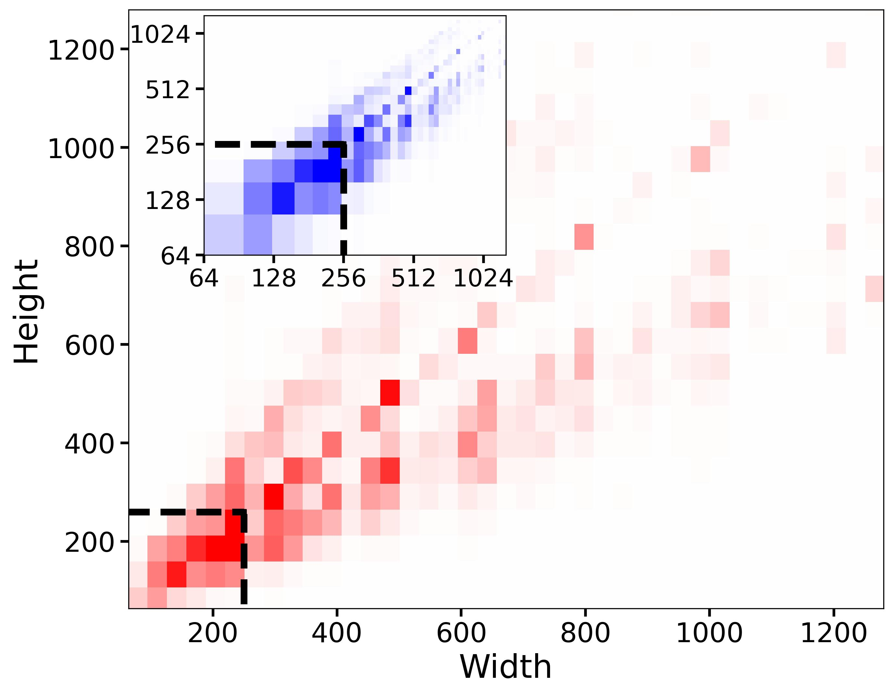

<!DOCTYPE html>
<html lang="zh-CN" data-theme="light">
<head>
<meta charset="UTF-8">
<meta name="viewport" content="width=device-width, initial-scale=1.0">
<title>第 25 章 潜在扩散与 Stable Diffusion · 多模态大模型 Cookbook</title>
<link rel="stylesheet" href="../assets/css/style.css">
<script>window.MathJax={tex:{inlineMath:[["$","$"],["\\(","\\)"]],displayMath:[["$$","$$"],["\\[","\\]"]]},svg:{fontCache:"global"}};</script>
<script src="https://cdn.jsdelivr.net/npm/mathjax@3/es5/tex-chtml.js" async></script>
</head>
<body>
<div id="progress-bar"></div>
<nav id="sidebar"></nav>
<header id="topbar">
  <button id="menu-btn">☰</button>
  <div id="search-box"><input id="search-input" placeholder="搜索全书…"><div id="search-results"></div></div>
  <div class="topbar-actions"><button class="tb-btn" id="theme-btn">🌓 主题</button></div>
</header>
<main class="content"><div class="article">

<header class="book-header">
  <div class="part-badge">第四部分 · 文生图与视觉生成</div>
  <h1 class="chapter-title">第 25 章　潜在扩散与 Stable Diffusion</h1>
  <div class="chapter-meta"><span>预计阅读 110 分钟</span><span>难度 ★★★★☆</span><span>前置：第 24 章（扩散数学）、第 12 章（CLIP）、第 23 章（VAE）</span></div>
</header>

<div class="toc-mini"><b>本章目录</b><ol>
  <li><a href="#sec-1">LDM 的动机：把扩散搬进潜在空间</a></li>
  <li><a href="#sec-2">架构解剖：VAE、UNet 与文本条件</a></li>
  <li><a href="#sec-3">UNet 内部：ResBlock、注意力与时间嵌入</a></li>
  <li><a href="#sec-4">Stable Diffusion 1.x / 2.x / XL 的演进</a></li>
  <li><a href="#sec-5">采样器实战与负提示词</a></li>
  <li><a href="#sec-6">微调路径：全参、LoRA 与 Textual Inversion 的位置</a></li>
  <li><a href="#sec-7">显存分析与工程清单</a></li>
  <li><a href="#sec-8">动手实践：diffusers 全流程与 UNet 解剖</a></li>
  <li><a href="#sec-9">本章小结</a></li>
</ol></div>

<div class="box-tip"><p class="box-title">💡 本章导读</p>
<p>Stable Diffusion（SD）是生成模型史上第一次"算力民主化"：LDM 论文（arXiv:2112.10752，CVPR 2022）把扩散从像素空间搬进潜在空间，训练成本降低约一个数量级，配合开源权重与 2022 年 8 月的公开发布，直接点燃了 AIGC 产业与开源生态。本章以 SD1.5→SDXL 为解剖对象，把 LDM 的四大组件（VAE、UNet、文本条件、调度）逐层拆开，给出每个组件的数学、形状与显存账单，并完成从推理到微调的工程闭环。读完本章，你将能"看见"任何一次 SD 生成的全部计算流——这是第 26 章（ControlNet）与第 45 章（ComfyUI 工作流）的地基。</p></div>

<h2 id="sec-1"><span class="sec-no">1.</span>LDM 的动机：把扩散搬进潜在空间</h2>
<p>像素空间的扩散有个残酷的算术：512×512×3 的图像，UNet 要在 786k 维空间上做 1000 步去噪——<b>大量算力花在"感知上不可见的高频细节"上</b>。LDM 的观察（论文 Figure 2 的"感知-语义压缩"分析）：数据的大部分比特是感知细节，语义结构只占低维流形；<b>先用感知压缩（VAE）把"不可见比特"扔掉，再在语义空间做扩散</b>。量化收益：512×512×3 → 64×64×4（8 倍空间、48 倍数据压缩），扩散直接在 64×64×4 的"潜在像素"上卷积运算，每步 FLOPs 降 4–16 倍，<b>让单机 8×A100 训练成为可能</b>（对比 DALL-E 2 时代的集群）。</p>
<p>两阶段设计的代价与收益要诚实列出。<b>代价</b>：VAE 的重建误差是"天花板"（SD 的 VAE 在小字、精细纹理上有可见损失——这也是 SDXL 换更大 VAE、Flux 用 16 通道 VAE 的动机）；两阶段的错误不共享梯度（VAE 训好后冻结）。<b>收益</b>：扩散模型专注"语义生成"，同一潜空间模型可服务任意分辨率（配合 tiling decode 出 2K+ 图）。第 24 章"噪声即语义坐标"的视角再次成立：<b>潜在空间的 SNR 轴上，每一步都纯做语义决策</b>。</p>
<p>"为什么恰好是 8 倍压缩"值得一个量化论证。信息率视角：512²×3 压到 64²×4=16384 个潜变量——<b>每个潜变量承担约 48 倍原始比特</b>。f=4 保真高但算力仍贵；f=16 计算最省但小字/纹理损失明显（VAE 成为瓶颈）。f=8 是"UNet 算力可承受 + VAE 重建够用"的甜点——与第 14 章"分辨率=token 预算"同构，<b>潜空间分辨率=扩散的 token 预算</b>。2024 年 Flux/SD3 转向 16 通道潜变量，本质是"算力预算在 VAE 与 UNet 间的再分配"。</p>
<div class="box-theory"><p class="box-title">📐 理论推导：LDM 的目标函数与两阶段解耦</p>
<p>第一阶段：训练感知压缩 autoencoder $\mathcal E,\mathcal D$（第 23 章的 SD-VAE）：重建损失（L1/L2）+ 感知损失（LPIPS）+ 对抗损失（PatchGAN，锐化纹理）+ 极小 KL 正则（$\lambdapprox10^{-6}$，仅防潜空间方差爆炸——注意这不是"生成正则"，角色与标准 VAE 完全不同）。</p>
<p>第二阶段：在冻结的潜空间 $z=\mathcal E(x)$ 上训练条件扩散：</p>
<div class="math-block">$$L_{\mathrm{LDM}} = \mathbb{E}_{\mathcal E(x),\,c,\,\epsilon,\,t}\Big[\|\epsilon - \epsilon_\theta(z_t,\ t,\ \tau_\theta(c))\|^2\Big]$$</div>
<p>其中 $	au_\theta$ 是条件编码器（SD1.x 用 CLIP ViT-L 文本塔，77×768）。两阶段解耦的设计哲学：<b>"压缩"与"生成"是两个不同性质的问题</b>——压缩要保真（可独立评测），生成要语义（交给扩散）。这个思想在第 35 章多阶段训练中重现。</p></div>
<figure><figcaption>图 25-1　<b>感知压缩与语义压缩的分工</b>：感知压缩（VAE）去除高频细节，语义压缩（扩散）建模概念组合——LDM 的全部动机浓缩在这一张图（来源：Rombach et al., LDM, arXiv:2112.10752）。</figcaption></figure>
<div class="box-paper"><p class="box-title">📄 论文精读：LDM（Rombach et al., CVPR 2022, arXiv:2112.10752）</p>
<p><b>问题</b>：像素扩散质量高但算力昂贵，如何把扩散做成"用得起的研究工具"？<b>方法</b>：两阶段——感知压缩 AE + 潜空间条件扩散；交叉注意力作为"通用条件接口"（文本/布局/语义图）。<b>关键结果</b>：512px 无条件 FID 与 SOTA 相当但训练成本降约一个量级；文生图版本（SD）人类评测达到 DALL-E 2 水平。<b>为什么重要</b>：它是"开放权重生态"的起点，两阶段结构被 SDXL/SD3/Flux/视频模型全线继承；§4 的条件化统一框架是当代条件生成架构的模板。<b>延伸阅读</b>：Figure 2 是理解 LDM 的钥匙；对照 diffusers 的 AutoencoderKL 实现读论文附录效果最佳。</p></div>
<div class="box-recipe"><p class="box-title">🍳 实战配方：SD 生成的参数甜点区</p>
<p><b>SD1.5（512px）</b>：DPM++ 2M Karras 25–30 步、CFG 7–8、分辨率 512 方图或 512×768、负 prompt 10–25 token。<b>SDXL（1024px）</b>：30–40 步、CFG 5–7（XL 对 CFG 敏感，&gt;8 易过曝）、分辨率取官方桶、refiner 可选。<b>通用守则</b>：同 seed 同参数才可比；CFG 与步数联动；流程"小分辨率定型→桶内放大→超分收尾"。</p></div>


<h2 id="sec-1a"><span class="sec-no">1A.</span>为什么不是"端到端"：两阶段设计的理论辩护</h2>
<p>一个诚实的理论问题：VAE 冻结、两阶段训练，为什么不端到端联合训练（让重建损失与扩散损失一起优化）？三重论证：<b>①优化景观</b>——VAE 的重建目标与扩散的去噪目标量纲与梯度尺度差异巨大，联合训练需要极精细的损失平衡（λ 扫描成本高且任务相关），两阶段把耦合完全解除；<b>②角色清晰</b>——VAE 的评价标准（重建保真）与扩散的评价标准（生成质量）独立可测，出错时归因清晰；<b>③复用性</b>——一个训练好的 VAE 服务所有后续扩散实验（消融、换骨干、蒸馏都不用动它），工程上杠杆巨大。<b>反方观点</b>也存在：联合训练能让 VAE 学到"对扩散友好"的潜空间（如 SD3 时代的 16ch VAE 实际上是联合设计的结果），两阶段的"错误隔离"也意味着 VAE 的缺陷永远无法被扩散侧补偿。2026 年的实践共识：<b>研究与小规模训练用两阶段（冻结 VAE），旗舰级从头训练会重新设计 VAE（等价于"人工联合设计"）</b>。</p>
<p>与之相关的第二个理论问题：<b>为什么不在 VAE 的潜空间做自回归</b>（像 LLM 那样逐 token 生成）？答案潜藏在第 23 章：潜变量是连续的 4×64×64 张量，离散化（VQ）会引入量化误差、连续 AR 的曝光偏差在长序列上灾难性放大。扩散的"迭代精化"恰好匹配连续潜空间的性质——<b>表示的类型（连续/离散）决定生成的范式（扩散/AR）</b>，这个二元性贯穿第 19–27 章的所有架构争论。</p>
<h2 id="sec-2"><span class="sec-no">2.</span>架构解剖：VAE、UNet 与文本条件</h2>
<div class="tbl-wrap"><table>
<caption>表 25-1　SD1.5 一次生成的形状流（512×512、batch 1）</caption>
<thead><tr><th>阶段</th><th>组件</th><th>输入→输出形状</th><th>参数量</th><th>说明</th></tr></thead>
<tbody>
<tr><td>1. 文本编码</td><td>CLIP ViT-L text</td><td>"prompt" → 77×768</td><td>123M</td><td>一次前向可缓存</td></tr>
<tr><td>2. 初始化</td><td>—</td><td>→ 4×64×64 潜变量</td><td>—</td><td>$z_T\sim\mathcal N(0,I)$</td></tr>
<tr><td>3. 去噪循环</td><td>UNet ×N 步</td><td>(4×64×64)+t+77×768 → 4×64×64</td><td>860M</td><td>每步 CFG（×2 前向）</td></tr>
<tr><td>4. 解码</td><td>VAE decoder</td><td>4×64×64 → 3×512×512</td><td>49M</td><td>f=8；可 tiling</td></tr>
</tbody></table></div>
<p>工程要点：<b>①文本编码可缓存</b>（同 prompt 重复生成跳过阶段 1）；<b>②CFG 使 UNet 前向 ×2</b>（batch 拼接一次算完）；<b>③VAE decoder 是显存尖峰</b>（高分辨率需 tiling）。</p>
<p>把 CFG 行展开一层：<b>条件与无条件分支的唯一差别是文本编码</b>（空串/全 padding）——可拼 batch=2 一次前向。"批量共享"要小心：无条件输出仍依赖 $z_t$，不同请求不能共享；真正可共享的是<b>同请求的文本编码缓存</b>。常见错误：把 CFG 记成"对条件输出的缩放"——CFG 是<b>差值放大</b>（第 24 章公式），无条件分支置零等价于 γ=1 而非"关闭引导"。</p>
<figure><svg viewBox="0 0 760 300" xmlns="http://www.w3.org/2000/svg" style="width:100%">
  <defs><marker id="a25" markerWidth="10" markerHeight="10" refX="8" refY="3" orient="auto"><path d="M0,0 L9,3 L0,6 Z" fill="#64748b"/></marker></defs>
  <text x="380" y="24" text-anchor="middle" font-size="14" font-weight="bold" fill="#0f172a" font-family="sans-serif">SD1.5 推理数据流（512×512）</text>
  <rect x="30" y="52" width="150" height="52" rx="10" fill="#eff6ff" stroke="#2563eb" stroke-width="2"/>
  <text x="105" y="74" text-anchor="middle" font-size="12" font-weight="bold" fill="#1e3a8a" font-family="sans-serif">CLIP Text Encoder</text>
  <text x="105" y="92" text-anchor="middle" font-size="10.5" fill="#334155" font-family="sans-serif">prompt → 77×768</text>
  <rect x="30" y="140" width="150" height="52" rx="10" fill="#fffbeb" stroke="#d97706" stroke-width="2"/>
  <text x="105" y="162" text-anchor="middle" font-size="12" font-weight="bold" fill="#92400e" font-family="sans-serif">初始化 z_T</text>
  <text x="105" y="180" text-anchor="middle" font-size="10.5" fill="#334155" font-family="sans-serif">4×64×64 高斯噪声</text>
  <rect x="280" y="96" width="220" height="112" rx="12" fill="#f5f3ff" stroke="#8b5cf6" stroke-width="2"/>
  <text x="390" y="120" text-anchor="middle" font-size="13" font-weight="bold" fill="#5b21b6" font-family="sans-serif">UNet × 20–50 步（CFG ×2）</text>
  <text x="390" y="140" text-anchor="middle" font-size="10.5" fill="#4c1d95" font-family="sans-serif">ResBlock(时间) + CrossAttn(文本 K/V)</text>
  <text x="390" y="158" text-anchor="middle" font-size="10.5" fill="#4c1d95" font-family="sans-serif">Down 64→32→16→8 · Mid · Up</text>
  <text x="390" y="176" text-anchor="middle" font-size="10.5" fill="#4c1d95" font-family="sans-serif">输出 ε → 调度器更新 z</text>
  <text x="390" y="196" text-anchor="middle" font-size="10.5" fill="#7c3aed" font-family="sans-serif">860M · 显存主力</text>
  <rect x="580" y="140" width="150" height="52" rx="10" fill="#ecfdf5" stroke="#10b981" stroke-width="2"/>
  <text x="655" y="162" text-anchor="middle" font-size="12" font-weight="bold" fill="#065f46" font-family="sans-serif">VAE Decoder</text>
  <text x="655" y="180" text-anchor="middle" font-size="10.5" fill="#334155" font-family="sans-serif">→ 3×512×512</text>
  <line x1="180" y1="78" x2="276" y2="112" stroke="#2563eb" stroke-width="2" marker-end="url(#a25)"/>
  <line x1="180" y1="166" x2="276" y2="152" stroke="#d97706" stroke-width="2" marker-end="url(#a25)"/>
  <line x1="500" y1="152" x2="576" y2="162" stroke="#10b981" stroke-width="2" marker-end="url(#a25)"/>
  <text x="380" y="240" text-anchor="middle" font-size="11" fill="#94a3b8" font-family="sans-serif">总参数 ~1.03B · FP16 权重 ~2.1GB · 训练时 VAE 冻结，只训 UNet</text>
</svg><figcaption>图 25-2　<b>SD1.5 的四段式数据流</b>：形状标注让任何显存/延迟问题都可定位。</figcaption></figure>

<h2 id="sec-3"><span class="sec-no">3.</span>UNet 内部：ResBlock、注意力与时间嵌入</h2>
<p><b>①时间嵌入</b>——$t$ 经正弦编码（第 3 章同族）过两层 MLP 成 1280 维，以<b>加性方式注入每个 ResBlock</b>——"让同一网络在 1000 个噪声水平下表现不同"的机制，第 24 章"噪声即坐标"的参数化落点。<b>②ResBlock</b>——GroupNorm→SiLU→3×3 卷积，与时间嵌入相加再重复一遍，残差输出；负责"局部去噪"。<b>③CrossAttention</b>——只在 32/16/8 分辨率插入；query 来自图像、<b>key/value 来自 77×768 文本编码</b>——"文本控制图像"的全部通道。<b>④SelfAttention</b>——同分辨率内 patch 互看，负责全局一致性；Down/Mid/Up 三段 + 跳跃连接保细节。</p>
<div class="box-theory"><p class="box-title">📐 理论推导：CrossAttention 的完整形状账</p>
<p>以 8×8 层（通道 1280）为例：图像特征 $X\in\mathbb{R}^{64\times1280}$，文本 $C\in\mathbb{R}^{77\times768}$。$Q=XW_Q$、$K=CW_K$、$V=CW_V$，输出 $\mathrm{softmax}(QK^\top/\sqrt d)V\in\mathbb{R}^{64\times d}$——输出长度是<b>图像侧的 64</b>。三个推论：①文本 token 数只影响 K/V 计算量、不影响输出长度（prompt 长度自由）；②每个图像位置对 77 个 token 软组合——"逐词对齐"是学出来的；③token 影响力=各层注意力权重的积分（prompt-to-prompt 正是操作这些权重，第 26 章）。</p></div>
<div class="box-tip"><p class="box-title">💡 技巧：读懂"UNet 配置字符串"</p>
<p>SD1.5 的 <code>[2,2,2,2] / [1,2,2,2] / [320,640,1280,1280]</code>——4 个分辨率级，Down 每级 2 个 ResBlock、Up 每级 3 个（多 1 个接跳跃），通道 320/640/1280/1280，注意力只在后三级。<b>看懂配置串=能估参数与显存、能判断 LoRA 挂哪些层</b>。</p></div>

<h2 id="sec-4"><span class="sec-no">4.</span>Stable Diffusion 1.x / 2.x / XL 的演进</h2>
<div class="tbl-wrap"><table>
<caption>表 25-2　SD 家族关键差异</caption>
<thead><tr><th>维度</th><th>SD 1.4/1.5</th><th>SD 2.x</th><th>SDXL 1.0</th></tr></thead>
<tbody>
<tr><td>UNet 参数</td><td>860M</td><td>865M</td><td>2.6B</td></tr>
<tr><td>文本编码器</td><td>CLIP ViT-L ×1</td><td>OpenCLIP ViT-H ×1</td><td>双塔 CLIP-L + bigG</td></tr>
<tr><td>原生分辨率</td><td>512</td><td>768</td><td>1024（多桶）</td></tr>
<tr><td>训练数据</td><td>LAION 子集</td><td>严过滤</td><td>重标注 + 分桶</td></tr>
<tr><td>预测目标</td><td>ε</td><td>v（2.1）</td><td>ε</td></tr>
</tbody></table></div>
<p>三点演进逻辑：<b>①双文本编码器</b>——序列特征管细粒度、pooled 向量管全局；<b>②宽高比分桶</b>——摆脱方图桎梏 + size/crop 条件；<b>③refiner</b>——按噪声区间分工（思想价值大于工具价值，视频级联是它的后裔）。</p>
<p><b>训练数据的三次迭代</b>：SD1.x 用 LAION-aesthetics（无重标注，"咒语学"盛行）；SDXL 用内部重标注（合成 caption）；SD3/Flux 走 DALL-E 3 式<b>合成密集 caption</b>（第 27 章）。质量跃升的一半功劳在数据侧——caption 质量是被低估的变量。</p>
<figure><figcaption>图 25-3　<b>SDXL 的宽高比分桶训练</b>：按宽高比桶采样并施加 size/crop 条件（来源：Podell et al., SDXL, arXiv:2307.01952）。</figcaption></figure>
<div class="box-history"><p class="box-title">🕰 历史一刻：2022 年 8 月 22 日，权重开放</p>
<p>Stability 以 OpenRAIL 许可发布 SD1.4 权重，三个月内数千个社区微调涌现，LoRA/TI 生态与 prompt 工程成为大众技能——AIGC 的"寒武纪大爆发"由此起点。<b>开放权重不是市场策略，而是"把研究变成基础设施"的转折点</b>。</p></div>

<h2 id="sec-5"><span class="sec-no">5.</span>采样器实战与负提示词</h2>
<p>实操速查：<b>默认 DPM++ 2M Karras 20–30 步</b>；复现用 DDIM 确定性 50 步；实时场景 LCM/Turbo 4–8 步（CFG 1–2）。<b>负提示词</b>=“远离该分布的外推”：保持 10–30 token；(word:1.2) 语法=注意力操控；高 CFG 时负 prompt 影响同步放大。</p>
<p><b>Prompt 工程的机制解释</b>：①<b>77 token 截断</b>——"长 prompt 后半段无效"不是玄学；②<b>词序与加权</b>——注意力软对齐，靠前与重复 token 权重大；③<b>风格词的本质</b>——"masterpiece"调用训练 caption 分布的先验，在重标注新模型上失效；④<b>负 prompt 对偶性</b>——有效前提是"不要的东西"在分布中有清晰表示。把 prompt 当"给注意力写的选择性查询"，比当咒语更接近本质。</p>
<div class="box-warn"><p class="box-title">⚠️ 陷阱：出图异常的排查顺序</p>
<p>命中率从高到低：<b>①CFG 过高</b>（&gt;12 必崩）；<b>②分辨率离桶</b>；<b>③步数不足</b>（&lt;15 步的糊不是模型问题）；<b>④prompt 语法黑洞</b>（多主语冲突、77 截断）；<b>⑤VAE 损坏</b>（黑白噪点）。按序排查平均 5 分钟定位。</p></div>

<h2 id="sec-6"><span class="sec-no">6.</span>微调路径：全参、LoRA 与 Textual Inversion</h2>
<p>三种手段的生态位：<b>①全参微调</b>——领域迁移，需防遗忘；<b>②LoRA</b>——rank 8–32、可训参数 &lt;1%，学"主体/风格"，可插拔叠加；<b>③Textual Inversion</b>——只学伪词 embedding，最轻最弱。<b>口诀</b>：改风格/主体用 LoRA、改领域用全参、加新概念用 TI、控制构图用 ControlNet（第 26 章）。<b>先问控制需求，再问风格需求，最后才轮到微调</b>——新手最常搞反的顺序。VAE 细节：SDXL 与 SD1.5 的 VAE 不通用（混用出颜色漂移）。</p>
<div class="code-wrap"><div class="code-head"><span class="lang">python</span><button class="copy-btn">复制</button></div>
<pre><code># LoRA 训练 SD1.5（diffusers，核心 30 行）
from diffusers import StableDiffusionPipeline, DDPMScheduler
from peft import LoraConfig
import torch

pipe = StableDiffusionPipeline.from_pretrained(
    "runwayml/stable-diffusion-v1-5", torch_dtype=torch.float16)
lora_cfg = LoraConfig(r=16, lora_alpha=16, lora_dropout=0.0,
    target_modules=["to_q", "to_k", "to_v", "to_out.0"])
pipe.unet.add_adapter(lora_cfg); pipe.unet.train()
print("可训练参数(M):",
      sum(p.numel() for p in pipe.unet.parameters() if p.requires_grad)/1e6)

sched = DDPMScheduler.from_pretrained("runwayml/stable-diffusion-v1-5",
                                      subfolder="scheduler")
opt = torch.optim.AdamW([p for p in pipe.unet.parameters()
                         if p.requires_grad], lr=1e-4)
for x0, caption in loader:                       # x0: [B,3,512,512]
    with torch.no_grad():
        lat = pipe.vae.encode(x0.half().cuda()).latent_dist.sample()
        lat = lat * pipe.vae.config.scaling_factor              # 0.18215
        c = pipe.text_encoder(pipe.tokenizer(
            list(caption), padding="max_length", max_length=77,
            truncation=True, return_tensors="pt").input_ids.cuda())[0]
    t = torch.randint(0, sched.config.num_train_timesteps,
                      (lat.size(0),), device="cuda")
    noise = torch.randn_like(lat)
    z_t = sched.add_noise(lat, noise, t)
    loss = torch.nn.functional.mse_loss(
        pipe.unet(z_t, t, encoder_hidden_states=c).sample, noise)
    loss.backward(); opt.step(); opt.zero_grad()
# 推理：pipe.load_lora_weights(...)；多 LoRA 叠加用 set_adapters</code></pre></div>

<div class="code-wrap"><div class="code-head"><span class="lang">python</span><button class="copy-btn">复制</button></div>
<pre><code># LoRA 训练 SD1.5（diffusers，核心 30 行）
from diffusers import StableDiffusionPipeline, DDPMScheduler
from peft import LoraConfig
import torch

pipe = StableDiffusionPipeline.from_pretrained(
    "runwayml/stable-diffusion-v1-5", torch_dtype=torch.float16)
lora_cfg = LoraConfig(r=16, lora_alpha=16, lora_dropout=0.0,
    target_modules=["to_q", "to_k", "to_v", "to_out.0"])   # SD 的 attention 命名
pipe.unet.add_adapter(lora_cfg); pipe.unet.train()
print("可训练参数(M):",
      sum(p.numel() for p in pipe.unet.parameters() if p.requires_grad)/1e6)

sched = DDPMScheduler.from_pretrained("runwayml/stable-diffusion-v1-5",
                                      subfolder="scheduler")
opt = torch.optim.AdamW([p for p in pipe.unet.parameters()
                         if p.requires_grad], lr=1e-4)
for x0, caption in loader:                       # x0: [B,3,512,512]
    with torch.no_grad():
        lat = pipe.vae.encode(x0.half().cuda()).latent_dist.sample()
        lat = lat * pipe.vae.config.scaling_factor              # 0.18215
        c = pipe.text_encoder(pipe.tokenizer(
            list(caption), padding="max_length", max_length=77,
            truncation=True, return_tensors="pt").input_ids.cuda())[0]
    t = torch.randint(0, sched.config.num_train_timesteps,
                      (lat.size(0),), device="cuda")
    noise = torch.randn_like(lat)
    z_t = sched.add_noise(lat, noise, t)
    loss = torch.nn.functional.mse_loss(
        pipe.unet(z_t, t, encoder_hidden_states=c).sample, noise)
    loss.backward(); opt.step(); opt.zero_grad()
# 推理：pipe.load_lora_weights(...)；多 LoRA 叠加用 set_adapters 权重混合
# 注意：VAE 与 text encoder 全程冻结 —— 动它们是新手最常见的灾难</code></pre></div>


<p>回到表 25-1 的推理成本结构，把它换算成"一份延迟预算"（SD1.5，A100，FP16，batch 1）：文本编码 ~15ms（可缓存）；UNet 28 步 × ~45ms ≈ 1.26s（其中 CFG 使每步 ~45ms 而非 ~30ms）；VAE 解码 ~20ms。<b>UNet 占总延迟 97%</b>——所有加速手段（求解器、蒸馏、量化）本质都在打这 97%。另一个常被忽略的成本是<b>条件处理的批效应</b>：batch 8 时文本编码只多 ~10ms、UNet 每步 ~90ms（不是 8×45），<b>批处理的边际成本递减是扩散服务经济学的基础</b>（第 39 章展开为完整的吞吐模型）。</p>
<p>质量与成本的帕累托前沿也给一张实用表（512px，主观质量 1–5 分）：</p>
<div class="tbl-wrap"><table>
<caption>表 25-9　质量-成本帕累托（SD1.5 @A100）</caption>
<thead><tr><th>配置</th><th>延迟</th><th>主观质量</th><th>备注</th></tr></thead>
<tbody>
<tr><td>28 步 + CFG 7.5</td><td>1.3s</td><td>4.5</td><td>质量基准</td></tr>
<tr><td>20 步 + DPM++ 2M</td><td>0.95s</td><td>4.5</td><td>免费加速</td></tr>
<tr><td>10 步 + UniPC</td><td>0.5s</td><td>4.2</td><td>细节略糊</td></tr>
<tr><td>4 步 + Turbo</td><td>0.2s</td><td>3.8</td><td>预览/批量够用</td></tr>
<tr><td>1 步 + LCM</td><td>0.08s</td><td>3.2</td><td>实时交互</td></tr>
</tbody></table></div>
<p>读表的正确方式：<b>先确定业务的"最低可接受质量线"</b>（如电商 4.0、社交流量 3.5），再沿表往上找最便宜的配置——而不是默认用最贵配置再谈优化。这个"质量线倒推配置"的方法论适用于本章全部工程决策。</p>

<h2 id="sec-6b"><span class="sec-no">6B.</span>定制化的评估协议：如何证明"微调有效"</h2>
<p>微调 SD 后"感觉变好了"不等于可交付。一套最小评估协议（可直接搬用）：<b>①重建性指标</b>——主体一致性用 DINO/CLIP 特征相似度（微调主体图 vs 生成图），风格类用风格 CLIP 原型距离；<b>②泛化性指标</b>——held-out 提示集上的 CLIPScore（确保微调没把"听 prompt 的能力"吃掉——过拟合的典型症状是"什么 prompt 都出训练风格"）；<b>③多样性指标</b>——同 prompt 多 seed 的样本间距离（坍缩检测）；<b>④副作用指标</b>——通用基准（GenEval 子集）的退化检查（微调后的"能力税"）。四张表每周一次，和训练曲线放同一页 report。</p>
<p><b>数据侧的三个杠杆</b>（对微调效果的影响常大于超参）：<b>①caption 质量</b>——手写 caption（描述"这张图为什么好"而非"图里有什么"）显著优于自动打标；<b>②多样性结构</b>——20 张覆盖 10 种场景的收益 > 200 张同场景；<b>③负样本管理</b>——剔除非目标风格混入图（自动打标的 caption 会把"偶然元素"写进条件，让模型错误关联）。这三条与第 34 章的数据工程原则一脉相承——<b>小数据微调是数据工程的显微镜</b>，任何数据质量问题都会被放大呈现。</p>
<h2 id="sec-7"><span class="sec-no">7.</span>显存分析与工程清单</h2>
<div class="tbl-wrap"><table>
<caption>表 25-3　SD 显存账单（FP16，batch 1）</caption>
<thead><tr><th>场景</th><th>权重</th><th>总计（经验）</th><th>省显存手段</th></tr></thead>
<tbody>
<tr><td>SD1.5 推理 512</td><td>~1.7GB</td><td>~3.5GB</td><td>sequential offload → 4GB 卡</td></tr>
<tr><td>SDXL 推理 1024</td><td>~5GB</td><td>~9GB</td><td>VAE tiling + offload → 6GB 卡</td></tr>
<tr><td>SD1.5 LoRA 训练</td><td>1.9GB</td><td>~6–8GB</td><td>checkpointing → 6GB 卡</td></tr>
<tr><td>SD1.5 全参训练</td><td>1.7GB</td><td>~24GB+</td><td>8-bit Adam / FA</td></tr>
<tr><td>SDXL LoRA 训练 1024</td><td>~6GB</td><td>~20–24GB</td><td>bf16 + 累积</td></tr>
</tbody></table></div>
<p>优化按侵入性排序：<b>①attention slicing</b>（零损失）；<b>②VAE tiling decode</b>（高分辨率必需）；<b>③SDPA/xformers</b>（快 20–40%）；<b>④fp8 量化</b>（第 39 章）；<b>⑤offload</b>（最后手段）。工程清单：采样器配置随版本走；VAE fp16 溢出用 fp16-fix；高分辨率先"桶内生成+外部放大"；服务化拆 pipeline + prompt 缓存（第 39 章）。</p>


<div class="box-recipe"><p class="box-title">🍳 实战配方：SDXL→SD1.5 迁移决策与混合精度细节</p>
<p><b>精度工程</b>是 SD 工程里最容易被忽视的坑区。逐组件的精度建议：<b>UNet</b>——FP16/BF16 推理与训练皆可（BF16 无溢出风险但更慢一点点）；<b>VAE decoder</b>——FP16 在某些激活路径溢出（黑白噪点元凶），生产建议 FP32 decode 或 fp16-fix 权重；<b>文本编码器</b>——FP16 足够；<b>训练</b>——LoRA 用 FP32 主权重 + BF16 计算（PEFT 默认），全参训练 BF16 + FP32 优化器状态。<b>混合策略</b>：FP16 权重存储 + FP32 累加（matmul 的 accumulate 默认行为）是性能与稳定的平衡点；<b>_tf32</b>（Ampere+）对 FP32 路径免费提速，记得显式开启 <code>torch.backends.cuda.matmul.allow_tf32=True</code>。</p>
<p><b>SDXL vs SD1.5 的迁移决策清单</b>（很多团队卡在"要不要升级"）：<b>升</b>——需要 1024 原生、更好的文字与构图、多宽高比；<b>不升</b>——显存 &lt;8GB、生态依赖 1.5 的特定 LoRA/插件、延迟极敏感（XL 计算量约 3×）。<b>迁移成本</b>：所有 1.5 生态的 LoRA/Embedding 不兼容（架构不同），提示词需要重调（XL 对自然语言更友好、对"咒语"更不敏感——两个方向都要重测）。<b>经验值</b>：XL 单图成本约 2.5–3×，质量感知提升约 30–50%（场景依赖）——按 ROI 决策而非"新就是好"。</p></div>
<h2 id="sec-8"><span class="sec-no">8.</span>动手实践：diffusers 全流程与 UNet 解剖</h2>
<div class="code-wrap"><div class="code-head"><span class="lang">python</span><button class="copy-btn">复制</button></div>
<pre><code># 手动拆开 pipeline：SD 的本质就是这 20 行
import torch
from diffusers import StableDiffusionPipeline
pipe = StableDiffusionPipeline.from_pretrained(
    "runwayml/stable-diffusion-v1-5", torch_dtype=torch.float16).to("cuda")
with torch.no_grad():
    # 1) 文本编码（可缓存）
    inp = pipe.tokenizer("a cat astronaut", padding="max_length",
                         max_length=77, truncation=True,
                         return_tensors="pt")
    text_emb = pipe.text_encoder(inp.input_ids.cuda())[0]   # [1,77,768]
    # 2) 初始化潜变量
    z = torch.randn(1, 4, 64, 64, generator=torch.Generator(
        "cuda").manual_seed(42)).half().cuda()
    # 3) 去噪循环（DDIM + CFG）
    pipe.scheduler.set_timesteps(28)
    z = z * pipe.scheduler.init_noise_sigma
    for t in pipe.scheduler.timesteps:
        eps_all = pipe.unet(torch.cat([z]*2), torch.cat([t]*2).cuda(),
            encoder_hidden_states=text_emb.repeat(2,1,1)).sample
        eps_u, eps_c = eps_all.chunk(2)
        eps = eps_u + 7.5 * (eps_c - eps_u)                 # CFG 差值放大
        z = pipe.scheduler.step(eps, t, z).prev_sample
    # 4) VAE 解码
    img = pipe.vae.decode(z / pipe.vae.config.scaling_factor).sample
# UNet 解剖：attn2=交叉注意力（文本通道）的数量
attn2 = [n for n, _ in pipe.unet.named_modules() if "attn2" in n]
print(f"交叉注意力层: {len(attn2)}")</code></pre></div>
<div class="code-wrap"><div class="code-head"><span class="lang">python</span><button class="copy-btn">复制</button></div>
<pre><code># UNet 解剖：找文本注意力通道、估算各段参数
unet = pipe.unet
total = sum(p.numel() for p in unet.parameters())
print(f"UNet 参数: {total/1e6:.0f}M")
# attn2 = 交叉注意力（文本→图像通道）；attn1 = 自注意力
attn2_names = [n for n, _ in unet.named_modules() if "attn2" in n]
print(f"交叉注意力层数: {len(attn2_names)}")
print("示例:", attn2_names[:3])
# 每级分辨率的参数分布（哪个分辨率吃显存）
from collections import defaultdict
by_res = defaultdict(int)
for n, m in unet.named_modules():
    for pname, p in m.named_parameters(recurse=False):
        if "transformer_blocks" in n:
            res = n.split(".")[4] if len(n.split(".")) > 4 else "?"
            by_res[res] += p.numel()
for k in sorted(by_res): print(k, f"{by_res[k]/1e6:.0f}M")
# 洞察：8×8 级通道最宽（1280）但序列最短；32×32 级序列最长、激活最大
# —— 显存尖峰通常在 Down 段前两层，checkpointing 优先加在那里</code></pre></div>

<p><b>三大任务的统一性</b>：t2i=纯噪声起步；img2img=中途入场（SDEdit，第 24 章）；inpaint=每步"renoise+replace"；outpainting=mask 在外——<b>一个过程四种入口</b>，ComfyUI 的"工作流魔法"都是这个统一性的组合。</p>
<div class="tbl-wrap"><table>
<caption>表 25-4　出图问题诊断表（按命中率）</caption>
<thead><tr><th>症状</th><th>最可能原因</th><th>处方</th></tr></thead>
<tbody>
<tr><td>黑白噪点/灰图</td><td>VAE fp16 溢出</td><td>fp16-fix / fp32 decode</td></tr>
<tr><td>过曝刺眼</td><td>CFG 过高 / 调度缺陷</td><td>降 CFG；zero-terminal 修正</td></tr>
<tr><td>肢体畸形</td><td>CFG/分辨率/数据缺陷</td><td>降 CFG→对齐桶→负 prompt→换模型</td></tr>
<tr><td>忽略后半 prompt</td><td>77 截断/注意力稀释</td><td>压缩；(word:1.2)；双塔模型</td></tr>
<tr><td>多主体污染</td><td>token 冲突</td><td>拆分生成+inpaint；regional prompting</td></tr>
<tr><td>文字乱码</td><td>CLIP 盲区（第 12 章）</td><td>SD3/Flux 或后处理加字</td></tr>
</tbody></table></div>
<div class="box-tip"><p class="box-title">💡 三个"顿悟实验"</p>
<p>①把 CFG 设为 1——图仍在生成但"不听 prompt"，直观看到条件分支才是听懂 prompt 的手；②换 DDIM 确定性模式——同 seed 同图，"生成是 ODE 轨迹"；③打印中间步的 $x_0$ 预测——构图前 10 步就定了，后面全是细节。三个实验建立 LDM 的身体记忆。</p></div>


<h2 id="sec-6a"><span class="sec-no">6A.</span>训练你自己的 SD：数据、配方与常见失败</h2>
<p>微调 SD（全参或 LoRA）的训练配方有其独特之处，与 LLM SFT 的差异点值得逐条列出。<b>数据格式</b>：图像 + caption 成对（webdataset 或文件夹+txt），分辨率按训练目标统一（512 全参/1024 LoRA），<b>bucketing</b>（按宽高比分桶避免拉伸形变）是工程标配。<b>损失</b>就是第 24 章的 $L_{\mathrm{simple}}$ 在潜空间的版本——<b>没有"回答 loss mask"的问题</b>（caption 全程作为条件，不参与 loss），这是与 LLM SFT 最本质的区别。<b>文本条件 dropout</b>：随机 10% 丢弃 caption（置空），让模型同时学会无条件分支——这是 CFG 的训练侧 prerequisite，漏掉它推理时 CFG 会失效（出图"不听 prompt"）。</p>
<div class="tbl-wrap"><table>
<caption>表 25-5　SD 微调配方速查</caption>
<thead><tr><th>参数</th><th>LoRA（风格）</th><th>LoRA（主体/人物）</th><th>全参（领域）</th></tr></thead>
<tbody>
<tr><td>数据量</td><td>20–200 张</td><td>15–50 张（多角度）</td><td>1 万–百万级</td></tr>
<tr><td>rank</td><td>8–16</td><td>16–32</td><td>—（全参）</td></tr>
<tr><td>学习率</td><td>1e-4</td><td>1e-4～2e-4</td><td>1e-5～2e-5</td></tr>
<tr><td>步数</td><td>1000–3000</td><td>1500–4000</td><td>按数据量定 epoch</td></tr>
<tr><td>文本 dropout</td><td>0–5%</td><td>5–10%（配 class prompt）</td><td>10%</td></tr>
<tr><td>正则</td><td>—</td><td>class prior loss（DreamBooth 式，第 28 章）</td><td>混入通用数据 5–20%</td></tr>
<tr><td>停止信号</td><td>验证集风格贴合、开始"背图"即停</td><td>同左 + 主体相似度（DINO）峰值</td><td>FID/CLIPScore 平台期</td></tr>
</tbody></table></div>
<p><b>常见失败与诊断</b>：<b>①"背图"（过拟合）</b>——输出与训练图几乎一致：数据太少/步数太多/rank 过大，降参或加正则；<b>②LoRA 不生效</b>——target_modules 漏挂（SD1.5 的 attention 实现里线性层名为 to_q/to_k/to_v/to_out，与 LLM 的命名不同！）；<b>③训练 NaN</b>——fp16 溢出（换 bf16）、学习率过大、数据里有坏图（全黑/超小）；<b>④训练后 CFG 失效</b>——忘了文本 dropout 或推理时 CFG scale 用 1；<b>⑤文字/细节退化</b>——VAE 也被微调了（不要动 VAE！）。</p>
<div class="box-tip"><p class="box-title">💡 技巧：LoRA 权重的"体检"三板斧</p>
<p>训完一个 LoRA 先别急着出图，做三件事：<b>①看权重范数分布</b>——各层 $\|\Delta W\|$ 相差过大说明某些层过拟合（可视化用 matplotlib 直方图）；<b>②zero-shot 强度扫描</b>——把 LoRA 权重乘 0.5/0.8/1.0/1.2 各出一张图，观察效果随强度的曲线，找到"风格明显但不崩坏"的工作区间（社区常用的权重滑条就是这个原理）；<b>③同 seed 对照</b>——加载与不加载 LoRA 各出一张同 seed 图，diff 可视化，确认改动集中在预期区域（如画面风格而非构图）。</p></div>

<h2 id="sec-8a"><span class="sec-no">8A.</span>生产工作流模式：从脚本到 ComfyUI</h2>
<p>SD 的工程化使用有三种形态，各自适用不同规模：<b>①脚本/pipeline</b>（diffusers）——研究与批量任务，灵活但需要自己管队列与显存；<b>②A1111/Forge WebUI</b>——交互创作，插件生态（ControlNet/LoRA 管理/XYZ plot）最全；<b>③ComfyUI</b>——节点图引擎，把"数据流"显式化（第 25 章那张 SVG 的每一块就是一个节点），适合可复现的生产管线与 API 化（第 45 章专章）。三者的底层数学完全一致，差异只在"控制面"。</p>
<p>生产系统的四个关键模式：<b>①请求合并与队列</b>——扩散是迭代计算，并发请求应共享 batch（同分辨率/同模型时吞吐近线性提升）；<b>②缓存三层</b>——prompt 编码缓存（同 prompt）、潜变量初始化缓存（同 seed+同 shape）、VAE 解码缓存（同 seed 同参数）；<b>③降级链</b>——显存不足时依次：关 CFG 合并 batch→减步数→换 Turbo 蒸馏模型→排队；<b>④结果寻址</b>——以"参数哈希"为键存储，天然去重与可复现。这四条在 vLLM 服务文本模型时的对应物（continuous batching/prefix cache/降级链/请求幂等）在第 39 章展开——<b>生成服务的工程学是相通的</b>。</p>
<div class="box-warn"><p class="box-title">⚠️ 陷阱：AIGC 生产中的版权与合规红线</p>
<p>SD 生态的许可体系要逐层核对：<b>模型权重</b>（OpenRAIL 允许商用但禁用违规用途；SD3/Flux 各有社区/商用许可差异）；<b>训练数据</b>（LAION 含版权图，多起诉讼进行中——商用产品建议用自有数据或明确许可数据微调）；<b>生成物</b>（各国对 AI 生成物版权与标识要求不同，中国要求 AIGC 显式标识，第 47 章）；<b>风格模仿</b>（"画得像某画师"在多国司法辖区有争议风险）。给团队的底线清单：不生成真人 deepfake、不用受版权保护角色商用、保留生成记录可溯源、输出带水印/元数据标识。</p></div>

<h2 id="sec-5a"><span class="sec-no">5A.</span>蒸馏与加速：把 28 步变成 4 步</h2>
<p>生产部署的核心议题是<b>步数经济学</b>：28 步 × 1 秒/步意味着单请求秒级延迟与 GPU 池成本。三条加速路线的原理与取舍：</p>
<p><b>①更好求解器（零训练）</b>——第 24 章的 DPM++ 2M/UniPC，把 ODE 积分的高阶信息用起来，28→20 步同质量。<b>②蒸馏采样器（少步）</b>——Progressive Distillation（arXiv:2210.02347）：教师 2 步=学生 1 步，逐轮对半，把 1024 步蒸到 4 步；LCM（Latent Consistency Models，arXiv:2310.04378）用一致性模型思想直接学"任意点跳到终点"；Turbo/Lightning 是其工程化品牌。<b>③引导蒸馏</b>——把 CFG 的双分支融合进权重（Flux 免 CFG 的原理），省一半前向。<b>组合建议</b>：生产 = 蒸馏模型（4 步）+ 引导内建；质量关键任务 = 原模型 + DPM++ 2M + 28 步。</p>
<div class="tbl-wrap"><table>
<caption>表 25-6　SD 加速方案对比（512px、A100 实测量级）</caption>
<thead><tr><th>方案</th><th>步数</th><th>单图延迟</th><th>质量损失</th><th>适用</th></tr></thead>
<tbody>
<tr><td>原模型 + DPM++ 2M</td><td>28</td><td>~2.5s</td><td>基线</td><td>质量基准</td></tr>
<tr><td>原模型 + UniPC</td><td>10–15</td><td>~1.2s</td><td>轻微</td><td>平衡</td></tr>
<tr><td>LCM-LoRA</td><td>4–8</td><td>~0.5s</td><td>可见（细节/文字）</td><td>交互预览</td></tr>
<tr><td>Turbo/Lightning 全蒸</td><td>1–4</td><td>~0.3s</td><td>中（CFG 固定）</td><td>实时/批量</td></tr>
<tr><td>引导蒸馏 + 少步</td><td>4–8</td><td>~0.5s</td><td>小（新模型配方）</td><td>新一代生产</td></tr>
</tbody></table></div>

<h2 id="sec-7a"><span class="sec-no">7A.</span>从 SD 到视频与 3D：LDM 范式的延伸</h2>
<p>LDM 的"两阶段"哲学是整个生成领域的模板，三个延伸方向值得提前建立坐标：<b>①视频</b>——把 VAE 换成时空 VAE（3D VAE：时间维也压缩），UNet/DiT 换成时空注意力，第 29 章的 CogVideoX/Sora 就是"视频版 LDM"；<b>②3D</b>——在 Triplane/体素潜空间做扩散（第 32 章）；<b>③可控生成</b>——在 UNet 旁挂控制分支（ControlNet，第 26 章）或直接改注意力（IP-Adapter）。<b>读任何新生成系统论文的第一问："它的 VAE 是什么、它的去噪网络是什么、条件怎么进来？"——三问答完，系统就解剖完了</b>。</p>
<div class="box-tip"><p class="box-title">💡 技巧：生成模型技术报告的"五分钟解剖法"</p>
<p>拿到一篇 T2I/视频论文，按顺序只看五处：①<b>架构图</b>——找 VAE/去噪骨干/条件注入三件套；②<b>损失函数</b>——ε/v/flow 目标？有无额外损失（感知/蒸馏/对抗）？③<b>调度</b>——离散 t 还是连续 σ？训练分辨率桶？④<b>数据表</b>——规模、caption 来源（人工/合成/重标注）、过滤策略；⑤<b>采样协议</b>——步数/CFG/求解器（评测数字是否对你可复现）。五处读完，论文 80% 的信息已到手——剩下的都是证明与消融细节，按需回读。</p></div>

<h2 id="sec-2a"><span class="sec-no">2A.</span>VAE 解码的显式细节与常见坑</h2>
<p>VAE 是 SD 里最被忽视的组件，出问题时往往最后才被怀疑。把它的工作细节补全：<b>编码</b>——512×512 输入经 4 级下采样到 64×64×8ch，再 1×1 卷积压到 4ch（均值/方差对角），采样 $z\sim\mathcal N(\mu,\sigma)$（<b>训练</b>）或直接取 $\mu$（<b>推理</b>，SD 管线用后者，减少随机性）；<b>缩放因子</b>——潜变量实际方差约 0.13，为对齐"单位方差噪声"的扩散假设，前后乘 $1/0.18215$，这个魔法数字是 SD1.x 特有的（SDXL 用 0.13025，Flux 又不同——<b>跨模型搬潜变量必查 scaling factor</b>）；<b>解码</b>——从 4ch 重建 RGB，最后的输出层用 $	anh$ 缩放。<b>tiling decode</b>：decoder 是全卷积，可分块解码后重叠混合——显存 OOM 时的标准救命术，但 tile 边界在强纹理区域可能有接缝，tile 越大越稳。</p>
<div class="tbl-wrap"><table>
<caption>表 25-7　各代 SD/新模型的 VAE 规格对照</caption>
<thead><tr><th>模型</th><th>下采样 f</th><th>潜变量形状（1024² 输入）</th><th>scaling factor</th><th>备注</th></tr></thead>
<tbody>
<tr><td>SD1.x</td><td>8</td><td>4×128×128</td><td>0.18215</td><td>小字/纹理是弱项</td></tr>
<tr><td>SDXL</td><td>8</td><td>4×128×128</td><td>0.13025</td><td>更大 decoder，质量提升</td></tr>
<tr><td>SD3</td><td>8</td><td>16×128×128</td><td>1.5305（近似）</td><td>16ch：信息率翻 4 倍</td></tr>
<tr><td>Flux</td><td>8</td><td>16×128×128</td><td>0.3611</td><td>小字保真显著提升</td></tr>
</tbody></table></div>
<p>16 通道的意义用信息率解释：同样 128×128 的空间网格，16ch 的"每像素比特预算"是 4ch 的 4 倍——VAE 不再是瓶颈，生成模型的注意力序列长度不变（128²）但信息密度更高。<b>这是 2024 年后新模型"文字渲染变好"的隐藏功臣之一</b>（另一半归功于合成 caption 数据）。</p>

<h2 id="sec-4a"><span class="sec-no">4A.</span>SD2.x 的兴衰教训：一次"过度安全"的产品决策</h2>
<p>SD2.0/2.1 是生态史上一次值得复盘的弯路：换 OpenCLIP-H 文本塔（更强的对齐）+ v-prediction + 更严的 NSFW 过滤（去掉大量人物/艺术家图像）。<b>结果</b>：社区测试发现 2.0 在"人物出图"上明显弱于 1.5，生态（LoRA/插件）继续押注 1.5，SD2 线实际死亡，直到 SDXL 才重建。<b>教训有三</b>：①<b>过滤是有代价的</b>——数据分布收窄直接削弱模型能力，"安全"与"能力"的权衡必须透明评估；②<b>生态兼容性是产品生命线</b>——文本编码器与架构大改=社区资产清零，迁移摩擦杀死了迭代动力；③<b>默认行为不能倒退</b>——2.0 相对 1.5 的"主观质量下降"让用户永远离开。对照 2024–2026 年各家新模型的发布策略（保持生态兼容、能力只增不减），SD2 的教训已经内化为行业常识。</p>
<div class="box-history"><p class="box-title">🕰 历史视角：从"模型即产品"到"模型即基础设施"</p>
<p>SD1.5→SD2→SDXL 的三年，也是开源生成生态商业模式的探索史：Stability 从"权重全开"转向"API+企业服务"的商业化挣扎，Meta/Google 用闭源演示能力上限，Black Forest Labs（SD 原班人马创立）用 Flux 证明"开放权重+现代架构"仍能站在第一梯队。到 2026 年，"开放权重生态"已被验证为生成领域的稳定形态——就像 LLM 界的 Llama/Qwen。<b>理解这段商业史不是为了八卦，而是为了预判：你在某个模型上构建的资产（LoRA/工作流/数据），它的"生态寿命"取决于背后组织的持续投入与许可稳定性</b>——技术选型的一半是供应链选型。</p></div>

<h2 id="sec-3a"><span class="sec-no">3A.</span>条件注入的完整 anatomy：从 SD1.5 到 SDXL/SD3</h2>
<p>把第 24 章"条件化地图"落到 SD 家族的具体实现，逐代看清条件通道的演化。<b>SD1.5</b>：唯一的条件入口是 16 个 attn2 层（77×768 的 K/V）——"文本作为外部记忆被查询"。附加机制：无。这带来两个知名缺陷：token 预算 77 硬顶；全局属性（如整体构图风格）缺少直接注入通道。<b>SDXL</b>：三通道条件——①双塔文本（1536 维拼接序列 + pooled 1280 全局向量，后者经 adaLN 式注入 UNet 浅层）；②size/crop 条件（四个标量：原高宽、裁剪高宽/顶部坐标，让模型知道"这张训练图的构图上下文"）；③refiner 接口。<b>SD3/Flux</b>：联合注意力（MMDiT，第 27 章）——文本与图像 token 在同一注意力里互为 QKV，条件与生成从"查询记忆"变成"对等对话"。</p>
<p>这条演化线的理论解读：<b>条件注入的"对称性"在不断提高</b>——从"图像查文本"（不对称，文本是被动记忆），到"加全局调制"（部分对称），到"联合互查"（完全对称）。对称性的收益是细粒度绑定（哪个词管哪片区域的控制更精确——文字渲染能力的架构基础），代价是注意力计算量与文本 token 数线性耦合（长 prompt 成本上升）。给实践者的判断框架：<b>prompt 很长/结构复杂 → 对称架构（SD3/Flux 类）收益大；短 prompt 风格图 → SDXL 级已足够</b>。</p>
<div class="box-theory"><p class="box-title">📐 理论推导：为什么"文字渲染"需要架构与数据双管齐下</p>
<p>文字渲染失败的两个独立原因：<b>感知侧</b>——4ch VAE 的信息率不足以保真小字形笔画（第 2A 节）；<b>条件侧</b>——交叉注意力下"一个字母 token"无法精确控制"对应笔画区域"（软对齐的粒度粗于字形）。修复必须双管：<b>16ch VAE</b>（或更高保真 tokenizer）解决感知侧；<b>联合注意力 + 合成密集 caption（含准确转写文字内容）</b>解决条件侧。DALL-E 3/SD3/Flux 的文字能力跃升正是双管齐下的结果——只改架构不改数据（或反之）都到不了 SOTA。这也是全书反复出现的"数据-架构联合设计"原则在生成侧的案例。</p></div>

<h2 id="sec-8b"><span class="sec-no">8B.</span>与 ControlNet 的接口预览：UNet 的"可插拔性"从哪来</h2>
<p>为第 26 章埋个伏笔：ControlNet 之所以能"复制 UNet 的编码段做控制分支"，依赖于 UNet 的一个结构性质——<b>Down 段与 Mid 段的输入输出接口是规范化的</b>（每个 block 的残差输出会被 Up 段通过跳跃连接消费）。把 Down+Mid 复制一份、接上控制条件、再把 12 份中间输出以 zero-conv 加回原 UNet 的跳跃路径——控制信息就以"额外残差"的形式注入，<b>原模型权重一个都不用动</b>。这个"零初始化残差注入"与第 13 章的门控、第 36 章 LoRA 的零初始化 B 矩阵是同一思想的三次现身：<b>向预训练模型安全添加新能力 = 添加一条从零开始的残差路径</b>。</p>

<h2 id="sec-8c"><span class="sec-no">8C.</span>常见疑难速答（FAQ 精选）</h2>
<p><b>Q1：为什么我的 LoRA 在别人机器上效果不同？</b>——LoRA 依赖底座模型的精确版本（同一个 checkpoint hash），底座不同权重语义漂移；同时 VAE/sampler/CFG 的默认差异也会改变观感。共享 LoRA 时附上"底座 hash + 推荐参数"是社区礼仪。</p>
<p><b>Q2：负提示词写很多词会更有效吗？</b>——不会。负分支同样经注意力消耗"容量"，堆词导致互相抵消与"对抗性伪影"；10–30 个精准词优于 200 个堆砌词。</p>
<p><b>Q3：能不能用 SD 生成训练数据给别的模型（自举）？</b>——可以且常用（第 34 章），但要注意<b>模型坍缩风险</b>：自举数据分布窄于真实分布，代代自举会累积偏差；工程上限制自举代数、混入真实数据锚定、监控分布距离（FID to real）。</p>
<p><b>Q4：为什么同参数不同显卡出的图不完全一样？</b>——浮点非结合性（并行归约顺序不同）在 1000 步迭代里被混沌放大；确定性生成需固定算法与硬件（同卡同版本），跨硬件"完全一致"不现实，工程上以"统计等价"为目标。</p>
<p><b>Q5：UNet 的 attention map 可视化有什么实际用途？</b>——三个：①诊断 prompt 中"哪些词真的起了作用"（token 归因）；②regional prompting/分区域控制（直接编辑注意力掩码）；③解释"为什么模型把两个主体画到一起"（注意力热图重叠）。工具链：diffusers 的 attention hook + prompt-to-prompt 论文的开源实现。</p>
<h2 id="sec-9"><span class="sec-no">9.</span>本章小结</h2>
<p>本章把第 24 章的扩散数学"部署"成 Stable Diffusion 的完整系统：LDM 的两阶段哲学用 48 倍压缩换来算力民主化；UNet 的时间嵌入/ResBlock/交叉注意力分别是"噪声坐标、局部肌肉、文本通道"的落点；SD1.5→SDXL 的演进展示数据工程的决定性；采样器、负提示词、微调地图与显存账单构成完整工程闭环。你现在能对任意一次 SD 生成画出它的形状流——这个能力在第 26 章（ControlNet）与第 45 章（ComfyUI）将直接变现。</p>


<h2 id="sec-9a"><span class="sec-no">9A.</span>案例研究：三条真实生产管线的技术选择</h2>
<p>把本章全部知识收敛到三个典型场景的选型与配置（可直接作为团队评审模板）。</p>
<p><b>案例一：电商商品图批量生成</b>。<b>需求画像</b>：每天 5 万张、商品主体固定（白底图）、背景/场景可变、文字标签要准。<b>技术方案</b>：SDXL+LoRA（每个品类一个 LoRA，20–100 张商品图训练）+ IP-Adapter 提供主体参考 + 后处理加文字（不用生成模型渲染文字，成本与准确率都更优）；<b>加速</b>：LCM 蒸馏 4 步预览 + 精排 28 步两段式；<b>合规</b>：生成图带元数据标识，训练数据为自有商品图（无版权风险）。<b>关键指标</b>：主体一致性（DINO 相似度）、拒图率（人工抽检）、单张成本。</p>
<p><b>案例二：游戏资产生成管线</b>。<b>需求</b>：风格严格统一（公司美术风格）、多视角一致性、可编辑（分层输出）。<b>方案</b>：全参微调或大 rank LoRA（数千张内部美术资产）+ ControlNet（姿态/线稿控制）+ 生成后人工精修；<b>关键权衡</b>：全参微调的领域吸附力强但每次风格升级要重训，LoRA 灵活但多 LoRA 叠加会互相干扰（加权调度是活跃的工程问题）。<b>指标</b>：风格 CLIP 一致性、可用率（免修直接入包比例）。</p>
<p><b>案例三：个人创作者的本地工作流</b>。<b>需求</b>：12GB 显存、低延迟交互、风格灵活。<b>方案</b>：SD1.5/SDXL 量化 + ComfyUI + 2–4 个 LoRA 插槽；<b>加速</b>：Turbo 蒸馏 4 步出草图、定稿再 28 步精修；<b>显存</b>：VAE tiling + SDPA，1024 生成控制在 10GB 内。<b>要点</b>：个人创作者的瓶颈是"可控性"而非"质量"——ControlNet/IP-Adapter 的熟练度决定产出下限。</p>
<div class="tbl-wrap"><table>
<caption>表 25-8　三案例的技术选择矩阵</caption>
<thead><tr><th>维度</th><th>电商</th><th>游戏</th><th>个人</th></tr></thead>
<tbody>
<tr><td>基座</td><td>SDXL</td><td>SDXL/全参定制</td><td>SD1.5/SDXL 量化</td></tr>
<tr><td>定制</td><td>品类 LoRA</td><td>全参/大 LoRA</td><td>社区 LoRA 组合</td></tr>
<tr><td>控制</td><td>IP-Adapter</td><td>ControlNet 全家</td><td>ControlNet + 蒙版</td></tr>
<tr><td>步数策略</td><td>4 步预览+28 精修</td><td>28–40</td><td>4↔28 双档</td></tr>
<tr><td>核心指标</td><td>一致性/成本</td><td>风格统一/可用率</td><td>可控性/延迟</td></tr>
</tbody></table></div>
<p>三个案例的共同元教训：<b>生成模型落地的难点 80% 在"控制与一致性"，20% 才在"画质"</b>——这与第 26 章（控制）、第 28 章（一致性）的主题呼应，也是 AIGC 产品与"玩具"的分水岭。</p>
<div class="box-quiz"><p class="box-title">✏️ 自测</p>
<p><b>1.</b> 写出 LDM 两阶段目标；VAE 的 KL 项为何取 1e-6？<br><b>答案要点</b>：先训感知 AE（重建+感知+对抗），再在冻结潜空间训条件扩散；KL 极小只为防潜空间方差爆炸——它是压缩器不是生成器。</p>
<p><b>2.</b> 512×512 中 UNet 注意力序列多长？潜在空间省在哪？<br><b>答案要点</b>：4096（64×64）；相比像素空间计算量降 4–16 倍，单卡训练可行。</p>
<p><b>3.</b> SDXL 双文本塔各自职责？<br><b>答案要点</b>：CLIP-L 序列管细粒度对齐；bigG pooled 管全局语义——双视野互补。</p>
<p><b>4.</b> attn1/attn2 区别？LoRA 挂哪？<br><b>答案要点</b>：attn1=自注意力，attn2=交叉注意力（文本通道）；LoRA 挂 attn 的 q/k/v/o。</p>
<p><b>5.</b> 黑白噪点图与糊图的首查项？<br><b>答案要点</b>：噪点=VAE fp16 溢出；糊图：CFG 过高→步数不足→分辨率离桶。</p>
<p><b>6.</b> 为什么"改构图"不该用微调？<br><b>答案要点</b>：构图是推理时控制问题，微调只改分布平均；应用 ControlNet 类空间条件——控制与风格正交。</p></div>

<footer>
  <div class="refs">
    <h2 id="refs">参考文献与推荐阅读</h2>
    <ol>
      <li>Rombach R, et al. <a href="https://arxiv.org/abs/2112.10752">High-Resolution Image Synthesis with Latent Diffusion Models</a>. CVPR 2022. arXiv:2112.10752.</li>
      <li>Ho J, et al. <a href="https://arxiv.org/abs/2006.11239">Denoising Diffusion Probabilistic Models</a>. NeurIPS 2020. arXiv:2006.11239.</li>
      <li>Podell D, et al. <a href="https://arxiv.org/abs/2307.01952">SDXL: Improving Latent Diffusion Models for High-Resolution Image Synthesis</a>. ICLR 2024. arXiv:2307.01952.</li>
      <li>Ho J, Salimans T. <a href="https://arxiv.org/abs/2207.12598">Classifier-Free Diffusion Guidance</a>. arXiv 2022. arXiv:2207.12598.</li>
      <li>Salimans T, Ho J. <a href="https://arxiv.org/abs/2210.02347">Progressive Distillation for Fast Sampling（v-prediction）</a>. ICLR 2022. arXiv:2210.02347.</li>
      <li>Zhang R, et al. <a href="https://arxiv.org/abs/1801.03924">The Unreasonable Effectiveness of Deep Features as a Perceptual Metric (LPIPS)</a>. CVPR 2018. arXiv:1801.03924.</li>
      <li>von Rütte D, et al. <a href="https://arxiv.org/abs/2305.08891">Common Diffusion Noise Schedules and Sample Steps are Flawed</a>. arXiv 2023. arXiv:2305.08891.</li>
      <li>Hu E, et al. <a href="https://arxiv.org/abs/2106.09685">LoRA: Low-Rank Adaptation of Large Language Models</a>. ICLR 2022. arXiv:2106.09685.</li>
      <li>Gal R, et al. <a href="https://arxiv.org/abs/2208.01618">An Image is Worth One Word (Textual Inversion)</a>. ECCV 2022. arXiv:2208.01618.</li>
      <li>Ronneberger O, et al. <a href="https://arxiv.org/abs/1505.04597">U-Net</a>. MICCAI 2015. arXiv:1505.04597.</li>
      <li>Radford A, et al. <a href="https://arxiv.org/abs/2103.00020">CLIP</a>. ICML 2021. arXiv:2103.00020.</li>
      <li>von Platen P, et al. <a href="https://github.com/huggingface/diffusers">Diffusers Library</a>. GitHub 2022.</li>
      <li>Schuhmann C, et al. <a href="https://arxiv.org/abs/2210.08402">LAION-5B</a>. NeurIPS 2022. arXiv:2210.08402.</li>
    </ol>
  </div>
  <nav class="pager"></nav>
</footer>

</div></main>
<button id="backtop">↑</button>
<script src="../assets/js/manifest.js"></script>
<script src="../assets/js/book.js"></script>
</body>
</html>
